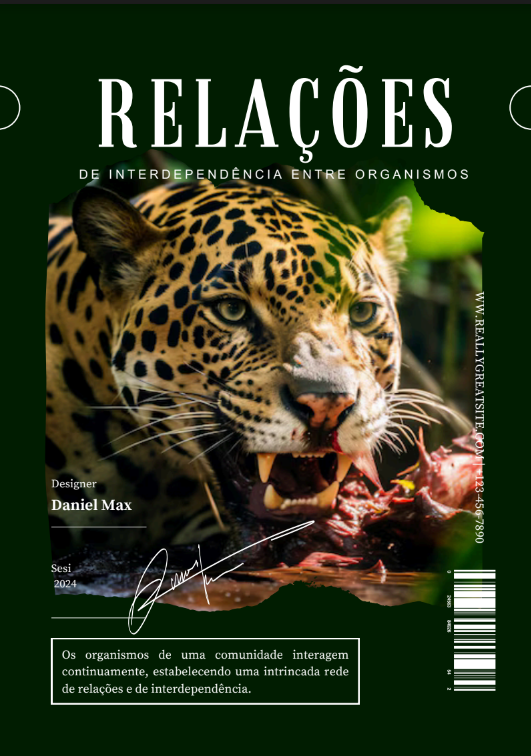

Página Inicial
Humanas
Linguagens
Matemática
Natureza
Técnico ▼
Desenvolvimento de Sistemas
Implantação e Manutenção de Sistemas
Modelagem de Sistemas

O objetivo dessa atividade foi desenvolver uma revista educativa que explore e explique as diferentes relações ecológicas encontradas no ambiente natural, com foco específico na fauna brasileira. A criação da revista sobre relações ecológicas com foco na fauna brasileira foi uma atividade que ofereceu uma excelente oportunidade para aplicar e consolidar conhecimentos sobre ecologia de forma prática e criativa Habilidades Desenvolvidas: C3 H15 e H18
O objetivo da atividade de criar um mapa mental sobre os componentes dos circuitos elétricos é fornecer uma representação visual clara e organizada dos principais elementos envolvidos em circuitos elétricos. Isso facilita a compreensão e a memorização das funções e características de cada componente, promovendo um aprendizado mais eficiente e integrado sobre o funcionamento dos circuitos elétricos. Habilidades Desenvolvidas: C6 e H35
O objetivo da atividade foi criar um informativo no formato A3 que aborda o impacto do uso de plástico no meio ambiente, oferecendo dicas e alertas sobre como reduzir o consumo de plástico e minimizar seus efeitos nocivos. A atividade teve vários pontos positivos. Primeiramente, o formato A3 proporcionou amplo espaço para apresentar informações de maneira clara e visualmente atraente. Habilidades Desenvolvidas: C3 H15 e H18.
A atividade proposta envolveu a criação de um informativo detalhado sobre o ácido benzoico, cobrindo aspectos essenciais como o nome oficial e usual, fórmula molecular e estrutural, grupos funcionais, aplicações cotidianas, segurança e cuidados no manuseio, e curiosidades relacionadas. A atividade foi estruturada para fornecer uma compreensão abrangente e prática do ácido benzoico, abordando suas propriedades, usos e considerações de segurança. Habilidades Desenvolvidas: C3 e H15 H18 C4 e H23